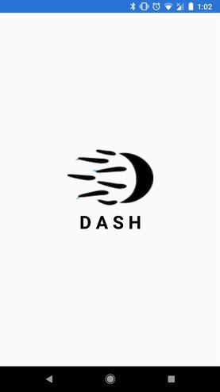

Projects
Some things I'm currently doing, and some things I've done in the past.
Hackathons/Competitions

NWHacks 2018 - 'Dash' Banking Bot
Dash was an attempt at making a conversational interface to banking. My team and I used
Microsoft Cognitive Services' LUIS for natural language processing, several microservices
to simulate a bank's internal systems and an Android app to interface with everything.
I primarily focused on authentication services for this project. I decided to make my own token-based
authentication system using a Python microservice, which actually ended up working well! I started with
basic username/password credentials, and tried to integrate MCS' voice authentication near the end of
the event. Did I need to make my own? No. Was it super fun? Absolutely.
See it on DevPost!

Battlesnake (2016-2019)
Battlesnake is an annual hackathon in Victoria, BC where
AIs are programmed to play the cell phone game snake. The rules are relatively simple: there are
several snakes on the board, and you must survive for as long as possible.
I've been attending Battlesnake since I started studying Computer Science, and have enjoyed using
what I've learned in class to make more and more sophisticated snakes. Since I started, I've contributed
to a whole family of snakes: